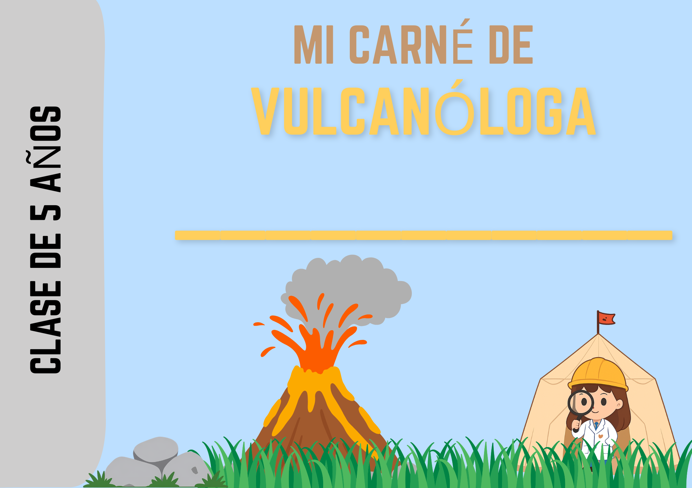
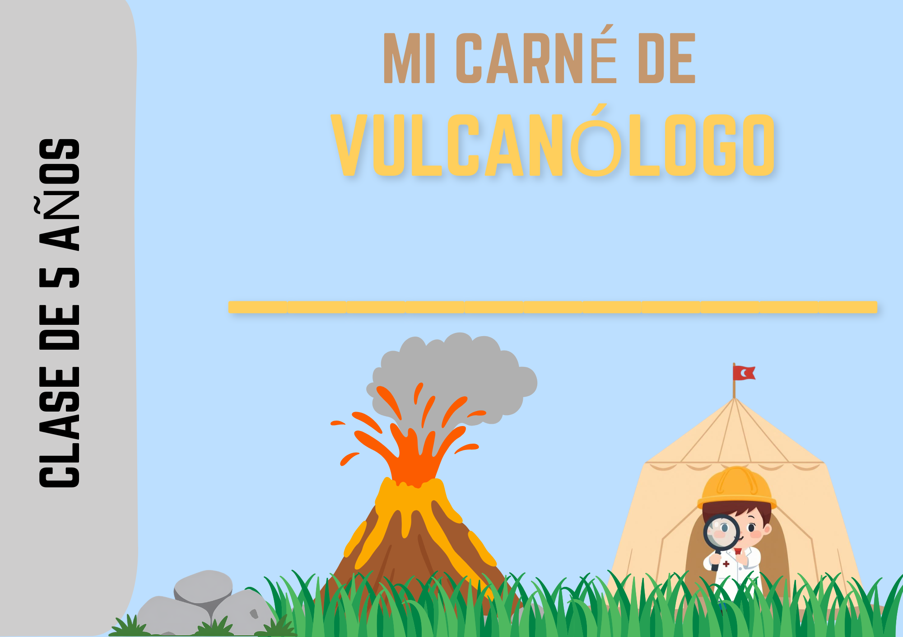
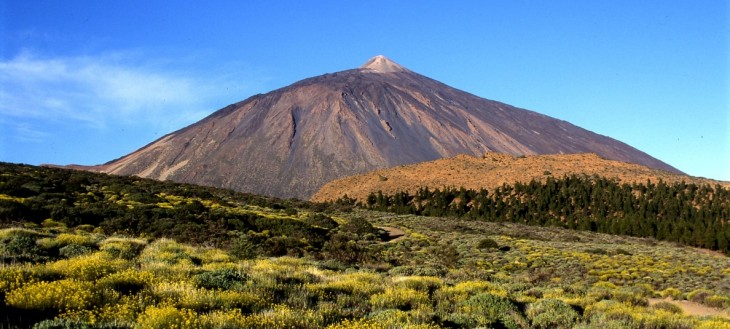
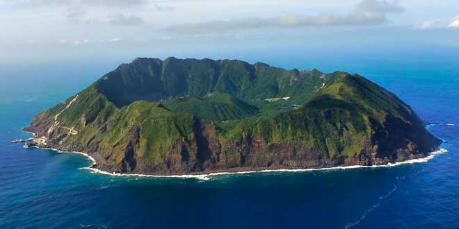

Sesión 2. Parte A
Vamos a elaborar nuestro propio carné de vulcanólogo y vulcanóloga. Cada uno y cada una de nosotros y nosotras tendremos el nuestro para ser ¡vulcanólogos/as oficiales!


Vamos a elaborar nuestro propio carné de vulcanólogo y vulcanóloga. Cada uno y cada una de nosotros y nosotras tendremos el nuestro para ser ¡vulcanólogos/as oficiales!


Estos son algunos de los volcanes más famosos del mundo. ¿Qué cosas veis diferentes entre ellos? ¿Y cuáles son iguales?

TEIDE. ESPAÑA. ETNA. ITALIA.

AOGASHIMA. JAPÓN.Obra publicada con Licencia Creative Commons Reconocimiento Compartir igual 4.0